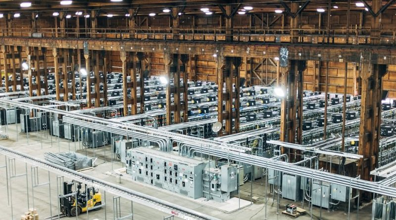

# Decentralization: I Still Want to Believe *[Adam Ierymenko](index.html) | August 29th, 2018* *** It's been about four years since I wrote an extremely popular essay entitled [Decentralization: I Want to Believe](decentralization.html). In this essay I examine the problem of full decentralization in computer systems, discuss the reasons for its inherent difficulty, and examine one potential work-around for the worst barriers to decentralization: least privilege centralization a.k.a. "blind idiot gods." Many people misinterpreted this essay as an overzealously skeptical attack on the very concept of decentralization or as some kind of algorithmic argument for the neo-reactionary thesis. Its goal was quite the opposite. Any engineering undertaking must begin with a careful statement of the problem. It's also helpful to examine ways the problem (provably) can't be solved or approaches that have failed in the past. Was [this paper](https://groups.csail.mit.edu/tds/papers/Lynch/podc89.pdf) written to stop people from building distributed systems? Quite a bit has happened in the previous four years. The primary engineering MacGuffin of the original essay, [ZeroTier](https://www.zerotier.com/), still exists and still continues to grow. I am now working on this and related projects full time. Money demands a certain amount of homage be paid to boring enterprise networking problems like rules, micro-segmentation, and access control, but helping decentralize communications on the Internet remains a prime motive. I've also had quite a bit of time to think about the underlying questions raised in the original essay. I've come to realize that the challenges and potential solutions discussed in 2014 are only a small part of something much larger. ## Flying Saucers and Flesh Wounds Practical large scale decentralization of information systems isn't a 20, 50, or 100 year old problem. It's a five billion year old problem. Let's start with what happens when you dismember mammals. <iframe class="youtube" src="https://www.youtube.com/embed/-6VTci1Bunk" frameborder="0" allow="autoplay; encrypted-media" allowfullscreen></iframe> The reality would be a lot less comical but fundamentally the same. When you cut off a mammal's arm or leg, it just sits there. Why? The cells are not dead, at least not immediately. If you cut me in half why doesn't my top half crawl after you while my legs run around and kick you in the rear? Mammals are also full of single points of failure: heart, lungs, arteries, and of course brain. Damage any of these even just a little bit and the whole organism collapses and likely dies. For any complex system there exists one or more basic parts that can't for fundamental physical reasons be further divided without losing the essential qualitative aspect of their character. For computer systems it's the node (or "machine," "box," "host," etc.), a CPU and its associated supporting components. For life it's the cell. Break apart a cell and it's no longer life. Break apart a node and it's no longer [Turing complete](https://en.wikipedia.org/wiki/Turing_completeness). For the first few billion years of Earth's history nearly all life consisted of individual cells or small relatively inert colonies. Then, about 541 million years ago (give or take a few), something quite amazing happened. Life "suddenly" (in geologic time) became orders of magnitude more complex and dynamic in an event termed the [Cambrian explosion.](https://en.wikipedia.org/wiki/Cambrian_explosion) While multiple evolutionary changes contributed to this explosion of capability, the evolution of centralized coordination and hierarchical structure seem key. The Cambrian explosion is when cells organized into organs and tissues under the centralized command of brains and central nervous systems. This gave them the ability to swim, crawl, and fly, and perhaps more importantly to learn, think, plan, and act teleologically. Animals are organized like kingdoms. Some cells like skin, immune cells, blood cells, and the like are expendable serfs. Others like those of the heart, lungs, and central nervous system are lords, knights, and nobles. At the top of the hierarchy there appear to be a relatively small subset of brain cells that work like a ruling oligarchy to initiate or suppress large scale actions. All these cells are essentially clones, so while this might seem like a bad deal for the skin and the blood the genes contained within these cells get much better [Darwinian fitness](https://en.wikipedia.org/wiki/Fitness_(biology)) from the arrangement. But why not adopt a more egalitarian structure? Imagine an organism whose cells do not irreversably differentiate but instead rapidly switch between tasks as needed. Information processing is decentralized in the sense that all cells participate, and learned information is distributed in a fault tolerant manner throughout the entire population. A decentralized animal would be like a biological version of this: <iframe class="youtube" src="https://www.youtube.com/embed/goHEebEPfRw" frameborder="0" allow="autoplay; encrypted-media" allowfullscreen></iframe> Surely something that *badass* would have out-survived and out-reproduced [a bunch of glorified pillbugs](https://en.wikipedia.org/wiki/Trilobite). Existence proofs are important. The non-existence of complex decentralized animals might be why we don't have a distributed search engine. Imagine a large UFO descends from the sky and hovers siliently over Los Angeles for a few days. It doesn't communicate or do much of anything, just hangs there in the sky. It dissipates heat but does not move air or any other medium. Those below it feel no wind or "jet wash" and detect no abnormal radiation. Then it flies away and leaves nothing behind. Two major things would happen after this event. One is that our religious and metaphysical beliefs would shift significantly based on the knowledge that we are not alone in the universe. The other is that within 50 years or less we would likely have our own reactionless engine or method of controlling or countermanding gravity. The aliens in this scenario didn't give us any technology, but they showed us what was possible. After seeing an existence proof our thus far rational skepticism toward claims of reactionless drives would cease and any promising avenue would be followed aggressively to its end. Armed with rational optimism we'd find it eventually. For those of us attempting to discover ways to decentralize computer systems and networks there is no such comfort. Nature provides no good examples of intelligent, complex, dynamic egalitarian blobs. Everything in nature larger than a cell that does anything particularly interesting in a conscious or teleological sense is a centralized hierarchy of specialized units. ## Silicon and Carbon The absence of a clear existence proof in nature is discouraging but it's not the final word. Beware claims of impossibility that do not reduce clearly and directly to solid and unassailable first principles. Arguments against perpetual motion machines skirt as close to omniscient truth as humans can get, but arguments that aren't tied as closely to fundamental physical laws [have a less reliable history.](https://lockhaven.edu/~dsimanek/neverwrk.htm) The [first installment of this series](decentralization.html) was once again an attempt to state and characterize a problem, not an argument against its solvability. We can and do beat nature. Given the wavelengths of light absorbed by chlorophyll, plant photosynthesis is [limited to a theoretical maximum efficiency of about 11%, with typical real world efficiency being only 3-6%.](https://en.wikipedia.org/wiki/Photosynthetic_efficiency) The best artificial photovoltaic panels on the other hand [reach efficiencies as high as 46%](https://en.wikipedia.org/wiki/Solar_cell_efficiency), over seven times as efficient as the best photosynthetic plants. Why can we beat nature like this? There are numerous reasons. First among these is that we possess a brain that appears capable of feats of information integration that do not have clear equivalents in the biological evolutionary process. (The [evolution of evolvability](https://en.wikipedia.org/wiki/Evolvability) is a thing but we don't know how sophisticated these mechanisms can get.) Using conceptual and logical thinking we can model and infer the higher-order structure of problem domains and use this understanding to inform our exploration of them. In other words we have both experiment and theory while evolution seems like it can only experiment. Another limitation of biological evolution is the constraint of biological phenotype. A biological adaptation only increases fitness if it can do so as part of an embodied living organism. Our miraculously efficient solar cells are made of things that are not alive, likely could never be alive, require temperatures and pressures to refine that far exceed the capacities of living organisms, or are even toxic to organic metabolism. There's simply no way for conventional biological evolution to even "go there." Computers are as alien to biology as solar cells. Living things can't perform trillions of calculations flawlessly, relay signals across vast distances in milliseconds, or duplicate enormous amounts of information with perfect fidelity. There are many things living organisms can do that computers can't (yet?), but there are equally many cases of the inverse. It's possible that some of these unique capabilities might be things that are hard requirements for full decentralization. If that's the case then maybe nature never invented amorphous decentralized animals for reasons that are similar to why it couldn't melt and refine pure silicon or build photosynthetic molecules full of toxic arsenic compounds. ## Peacocks On The Block Chain In the [previous essay](decentralization.html) the importance of cryptocurrency was minimized if not outright dismissed. This may have been a mistake. Bitcoin was dismissed largely on the grounds of its almost preposterous inefficiency. After ten years of an open ended mining arms race the Bitcoin network as a whole consumes as much electricity as a small nation to handle at most a few tens of transactions per second. A centralized microcontroller consuming less than one watt of power could handle multiples of this volume. Based on estimates of energy comsumption Bitcoin is at least ten billion times less efficient than a centralized database. Some alternative cryptocurrencies are more efficient than Bitcoin but are still quite pathetic when compared with a SQL database running on a small embedded system. If decentralization is intrinsically this inefficient it will always lose both in nature and in the marketplace, but maybe the important thing about Bitcoin isn't that it conclusively solves the problem in a single step. Rather its importance might lie in what it reveals about the problem domain and its potential solvability. Prior to Bitcoin many computer scientists thought that *secure* decentralized consensus strongly resistant to [Sybil](https://en.wikipedia.org/wiki/Sybil_attack) attacks was impossible. Today we know that's not the case. It's slow and expensive, but it can be done. That's a fundamental innovation; a *qualitative* leap in capability. Bitcoin's proof of work mechanism has parallels in nature like [costly signaling and conspicuous consumption.](https://en.wikipedia.org/wiki/Signalling_theory#Costly_signalling_and_Fisherian_diploid_dynamics) These can be involved in the negotiation of cooperation. The basic idea is that the decision of whether or not to take a risk by cooperating with another individual can in part be informed by whether that individual is willing to do something expensive to prove their trustworthiness. This can work because an untrustworthy defector won't be trusted again, so they can only obtain a short term gain. If the cost of the proof is greater than the benefit of a single defection it's a net loss. A cooperator on the other hand can cooperate multiple times once trust is established, earning a reward that eventually overcomes the initial price of admission. This along with sexual display is one reason you see a lot of costly displays in nature like Peacock feathers, exhibitory risk taking like ritualized fighting, or... warehouses full of chips burning tons of energy to repeatedly solve cryptographic hash functions?  It's not an exact parallel but it's close, and the *conceptual* resemblance is probably not a coincidence. Other proposed alternatives to proof of work like [proof of stake](https://en.wikipedia.org/wiki/Proof-of-stake) are even more explicitly reminiscient of this sort of trust negotiation protocol. Despite this connection there's something about cryptocurrency that is without parallel in nature. *Any* node on the network can verify a proof of work (or other kind of proof like a signature) *forever* and with no practical possibility of deception. Biological systems can't do this. As a result trust negotition in biology must be repeated endlessly for each pair of organisms that meet, making global large scale reliable trust across vast distances of space and time impractical. This limits the relative size and scale of decentralized biological systems to some small multiple of the size of the unit organism and to time scales not much longer than an individual life span. A decentralized "smart blob" could probably not be much bigger than a tiny [cnidarian](https://en.wikipedia.org/wiki/Myxozoa) while for humans we have things like [Dunbar's number](https://en.wikipedia.org/wiki/Dunbar's_number). Returning to the discussion of silicon and carbon above, perhaps the near perfect fidelity afforded by digital circuits as opposed to the very fallible analog computation present in living organisms is important. It may permit things that are otherwise either impossible or incredibly impractical. ## Blind Idiot Blobs Block chains and similar systems are slow. So what? What if they don't need to be very fast or to store very much information to take on a very important role in a decentralized system.